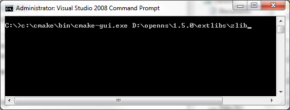
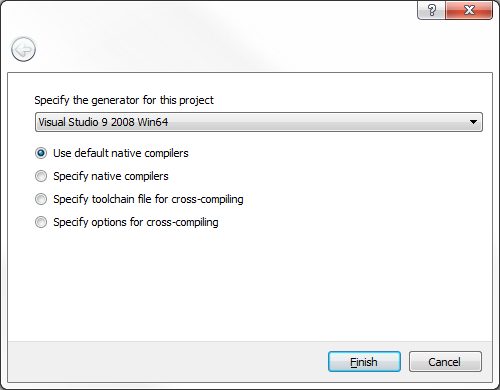

Building with Microsoft Visual Studio 2008
Note:
These instructions assume that the openns source code is located at
'D:/openns/1.5.0' and the CMake utility is installed at 'C:/cmake'.
- Extract the third party modules
- Configure and build zlib
- Configure and build HDF5
- Configure and build xerces
- Configure and build beecrypt
- Configure and build bag
Extract the third party modules
Browse
to the extlibs folder and extract the contained third party modules.
Note that the version numbers have been removed from the folder names
after extraction. For the Visual Studio build we will use beecrypt 4.1.2.

Configure and build zlib
From the Visual Studio command prompt launch the cmake gui to configure the build.

Specify the location of the cmake binary files. NOTE - The 'Advanced' option MUST be enabled.

Click the 'Configure' button. You will be prompted to create the output folder. Select Yes.

You will then be prompted to select the appropriate generate. NOTE - Be sure to select the Win64 generator for x64 builds.

Select the 'BUILD_SHARED_LIBS' option and specify the installation prefix.
BUILD
BUILD_SHARED_LIBS = YES
CMAKE
CMAKE_INSTALL_PREFIX = D:/openns/1.5.0/zlib/installed
Finally
click the 'Configure' and then 'Generate' buttons. The solution is now
available in the zlib/build folder. Launch Visual Studio and open the
newly generated solution. Build the solution in Release and Debug. When
the build has completed build the 'Install' project in Release and Debug.
Configure and build HDF5
In the CMake GUI select the HDF5 folder and specify the location of the binary files. Next click the 'Configure' button.

Click the 'Configure' button. You will be prompted to create the output folder. Select Yes.

You will then be prompted to select the appropriate generate. NOTE - Be sure to select the Win64 generator for x64 builds.
Update the following options.
BUILD
BUILD_SHARED_LIBS = YES
CMAKE
CMAKE_INSTALL_PREFIX = D:/openns/1.5.0/hdf5/installed
HDF5
HDF5_USE_16_API_DEFAULT = YES
HDF5_ENABLE_Z_LIB_SUPPORT = YES
Click the 'Configure' button again and then update the following options.
ZLIB
ZLIB_INCLUDE_DIR = D:/openns/1.5.0/zlib/installed/include
ZLIB_LIBRARY = optimized;D:/openns/1.5.0/extlibs/zlib/installed/lib/zlib.lib;debug;D:/openns/1.5.0/extlibs/zlib/installed/lib/zlib_d.lib
Finally click the 'Configure' and then 'Generate' buttons. The solution
is now available in the hdf5/build folder. Launch Visual Studio and
open the newly generated solution. Build the solution in Release and Debug. When the build has completed build the 'Install' project in
Release and Debug.
Configure and build xerces
Open
the xerces-all solution in Visual Studio located in the
D:\openns\1.5.0\extlibs\xerces-c\projects\Win32\VC9\xerces-all folder. Build the solution in Release and Debug.
Configure and build beecrypt
Launch the Visual Studio command prompt and browse to the beecrypt folder and run the following command:
nmake -f Makefile_bag X64=TRUE DEBUG=FALSE
nmake -f Makefile_bag clean
nmake -f Makefile_bag X64=TRUE DEBUG=TRUE
Configure and build bag
In the CMake GUI select the openns folder and specify the location of the binary files. Next click the 'Configure' button.

Click the 'Configure' button. You will be prompted to create the output folder. Select Yes.

You will then be prompted to select the appropriate generate. NOTE - Be sure to select the Win64 generator for x64 builds.
Finally click the 'Configure' and then 'Generate' buttons. The solution
is now available in the openns/build folder. Launch Visual Studio and
open the newly generated solution. Build the solution in Release and Debug.